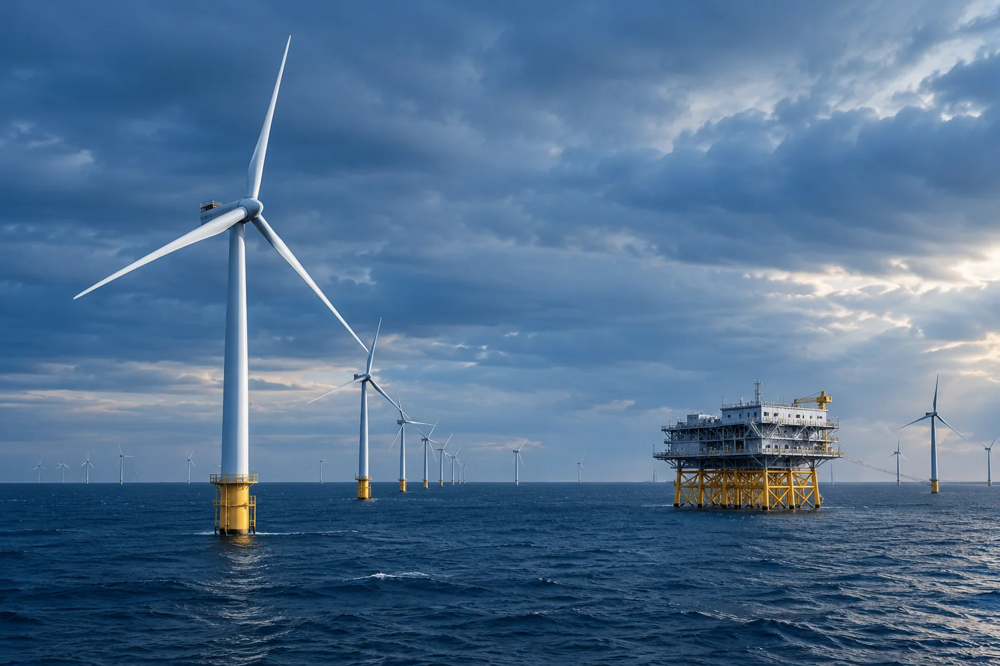

Acceptance test procedures
Prepared Site Acceptance Testing (SAT) and Harbor Acceptance Testing (HAT) guidance for high-voltage equipment packages.
PROJECT 02 / UNITED STATES / OFFSHORE WIND
Translating project requirements into structured acceptance testing for utility-scale offshore electrical infrastructure.

PUBLIC PROJECT CONTEXT
Coastal Virginia Offshore Wind is Dominion Energy’s commercial offshore wind development off Virginia Beach. The US Bureau of Ocean Energy Management approved a configuration of 176 wind turbines and three offshore substations, with an estimated capacity of approximately 2,600 MW. Semco Maritime’s consortium announcement describes three 880 MW offshore substations forming the electrical backbone of the development.
The public project description uses approximately 2.6 GW. This replaces the rounded 2.7 GW figure in the previous website and founder’s CV.
PERSONAL PROFESSIONAL EXPERIENCE
Prepared Site Acceptance Testing (SAT) and Harbor Acceptance Testing (HAT) guidance for high-voltage equipment packages.
Aligned the testing guidance with the applicable IEEE / IEC framework and the project’s owner / client requirements.
Focused on HV acceptance documentation as part of Semco Maritime’s engineering delivery. This experience is specific to testing preparation, rather than a claim of responsibility for the full wind farm.
Personal scope is based on the founder’s supplied CV. Public project sources provide background and do not independently verify individual responsibilities.
ENGINEERING PERSPECTIVE
For a multi-substation development, consistent acceptance documentation helps connect equipment-level verification with the wider commissioning programme. Clear requirements make the intended test scope easier for suppliers and site teams to interpret.
REFERENCES
Public sources reviewed 12 October 2026. Project figures and milestones are attributed to the linked publications; announced dates may change. Project names identify professional experience and do not imply endorsement or a commercial relationship with GridWave.
START A CONVERSATION